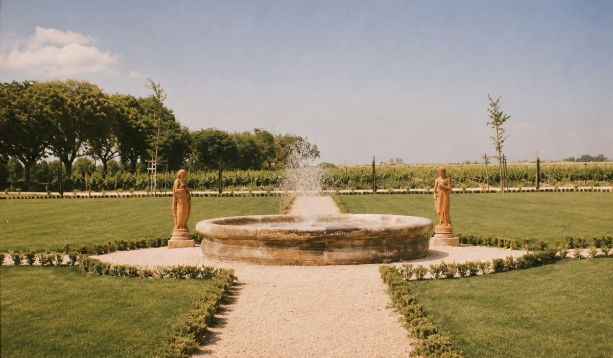
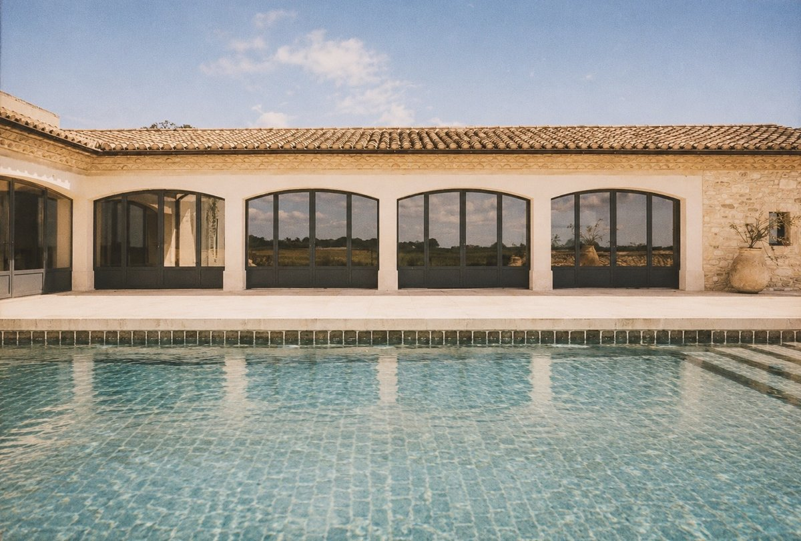

La Mairie
Rendez-vous à 15h30 à la Mairie de Saint-Mandé.
La cérémonie civile sera suivie d'une soirée au sein de la salle des fêtes de la mairie
LA WELCOME PARTY

Autour du lac du Mas de Rey pour lancer les festivités
LA HOUPPA
La cérémonie sous la houppa, suivie du dîner et de la soirée au Mas de Rey